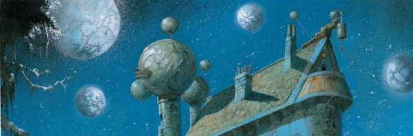

An anthology series that sets itself up in a fantasy world (the titular Telguuth) and breaks the mould of most of these one-off anthology affairs by allowing some two and three parters, and also by being the preserve of a single writer.
Art by Greg Staples
| Story Title | Parts | Pages | w indicates a wraparound coverCovers | Year(s) | Issues | Writer | Artist | Colourist | Letterer |
|---|---|---|---|---|---|---|---|---|---|
| A Little Knowledge | 1 | 8 | 0 | 2000 | 1191 | Steve Moore | Greg Staples | <-- | Steve Potter |
| Talking Heads | 1 | 5 | 0 | 2000 | 1192 | Steve Moore | Paul Johnson | <-- | Steve Potter |
| Music of the Spheres | 1 | 5 | 0 | 2000 | 1193 | Steve Moore | Siku | <-- | Steve Potter |
| The Eternal Bliss of Zebba Horath | 1 | 5 | 0 | 2000 | 1194 | Steve Moore | Simon Davis | <-- | Steve Potter |
| To Become a God | 1 | 5 | 0 | 2000 | 1195 | Steve Moore | Paul Johnson | <-- | Steve Potter |
| The Bride of Ballakruz-Krim | 1 | 5 | 0 | 2000 | 1196 | Steve Moore | Dean Ormston | <-- | Steve Potter |
| Men of Snakewood | 1 | 5 | 0 | 2000 | 1197 | Steve Moore | Siku | <-- | Steve Potter |
| Uhuros the Horrendous | 1 | 5 | 0 | 2000 | Reprints: M310 (supplement)1198 | Steve Moore | Carl Critchlow | <-- | Steve Potter |
| The Conqueror Wummb | 1 | 5 | 0 | 2000 | 1199 | Steve Moore | Paul Johnson | <-- | Steve Potter |
| The Transfiguration of Tesro Karnik | 3 | 15 | 0 | 2001 | 1227-1229 | Steve Moore | Siku | <-- | Annie Parkhouse |
| The Oscillations of Taramasellion | 2 | 10 | 0 | 2001 | 1235-1236 | Steve Moore | Siku | <-- | Ellie de Ville |
| The Caverns of Garnek-Spay | 3 | 15 | 0 | 2001 | 1240-1242 | Steve Moore | Carl Critchlow | <-- | Ellie de Ville |
| The Hunting of the Veks | 1 | 5 | 0 | 2001 | 1249 | Steve Moore | Siku | <-- | Ellie de Ville |
| The Vileness of Scromyx | 3 | 15 | 0 | 2001 | 1258-1260 | Steve Moore | Siku | <-- | Ellie de Ville |
| The Infinite Return of Varror Gan | 1 | 5 | 0 | 2001 | 1263 | Steve Moore | Siku | <-- | Ellie de Ville |
| The Atrocities of Pagafruuz Jeel | 1 | 5 | 0 | 2002 | 1283 | Steve Moore | Siku | <-- | Tom Frame |
| The Colossal Wealth of Karn Foul-Eye | 1 | 5 | 0 | 2002 | 1284 | Steve Moore | Stefano Cardoselli | Rita Gorgoni | Tom Frame |
| The Wheels of Fortune | 2 | 10 | 0 | 2002 | 1285-1286 | Steve Moore | Jon Haward John Stokesvarious | Angus McKie | Tom Frame |
| The Rousing of Rezik | 2 | 10 | 0 | 2002 | 1287-1288 | Steve Moore | Clint Langley | <-- | Ellie de Ville |
| The Black Arts of Skrixlan Nort | 1 | 5 | 0 | 2003 | 1329 | Steve Moore | Jon Haward | Angus McKie | Annie Parkhouse |
| Pagrok the Infallible | 2 | 10 | 0 | 2003 | 1330-1331 | Steve Moore | Jon Haward | Angus McKie | Annie Parkhouse |
| One Cold Winter Night… | 1 | 5 | 0 | 2003 | 1332 | Steve Moore | Jon Haward | Angus McKie | Annie Parkhouse |
| The Iniquities of Snedron | 2 | 10 | 0 | 2003 | 1333-1334 | Steve Moore | Jon Haward | Angus McKie | Annie Parkhouse |
| Holding the Fort | 1 | 5 | 0 | 2003 | 1369 | Steve Moore | Jon Haward John Stokesvarious | Angus McKie | Ellie de Ville |
| The Eternal Life of Emperor Ygg | 1 | 5 | 0 | 2003 | 1370 | Steve Moore | David Kendall | <-- | Ellie de Ville |
| year | episodes | pages |
| 1991 | 0 | 0 |
| 1992 | 0 | 0 |
| 1993 | 0 | 0 |
| 1994 | 0 | 0 |
| 1995 | 0 | 0 |
| 1996 | 0 | 0 |
| 1997 | 0 | 0 |
| 1998 | 0 | 0 |
| 1999 | 0 | 0 |
| 2000 | 9 | 48 |
| 2001 | 13 | 65 |
| 2002 | 6 | 30 |
| 2003 | 8 | 40 |
| 2004 | 0 | 0 |
| 2005 | 0 | 0 |
| 2006 | 0 | 0 |
| 2007 | 0 | 0 |
| 2008 | 0 | 0 |
| 2009 | 0 | 0 |
| 2010 | 0 | 0 |
| 2011 | 0 | 0 |
| 2012 | 0 | 0 |